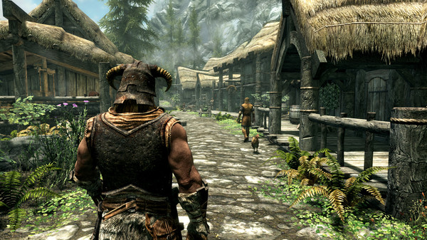
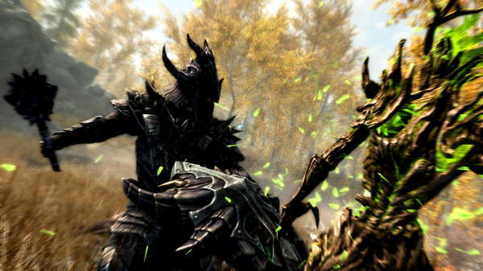
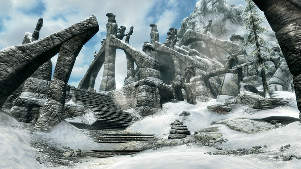
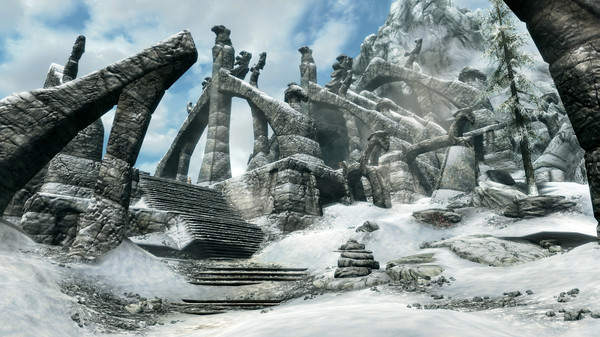
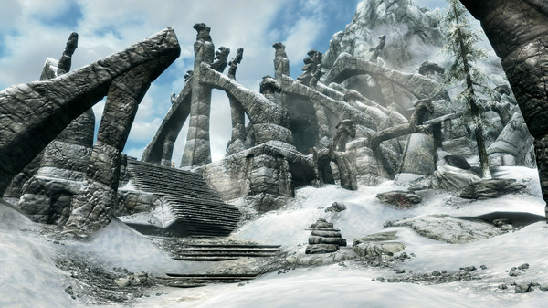

The Elder Scrolls V: Skyrim é um jogo eletrônico de RPG de ação
desenvolvido pela Bethesda Game Studios e publicado pela Bethesda
Softworks. É o quinto jogo principal da série The Elder Scrolls,
seguindo The Elder Scrolls IV: Oblivion. Foi lançado em 11 de novembro
de 2011 para Microsoft Windows, PlayStation 3 e Xbox 360. É o primeiro
jogo ocidental da história a receber 40/40 (nota máxima) na conceituada
Famitsu. O jogo conseguiu três prêmios no VGA 2011, incluindo Jogo do
Ano. Os acontecimentos do jogo passam-se duzentos anos depois da, já
quase esquecida, crise de Oblivion, no ano 201 da quarta era (4E 201) na
província de Skyrim, no norte de Tamriel, e 30 anos após a mais recente
Grande Guerra, onde o Aldmeri Dominion e o Império lutaram arduamente,
mas que quase extinguiu os humanos de Tamriel, e para evitar tal
derrota, acordaram com a Aldmeri Dominion, rendendo duas forças e
sujeitando-se as suas exigências. Skyrim é a terra natal de um povo
bravo chamados de Nords (uma raça de humanos) onde além da Grande
Guerra, irrompeu uma guerra civil após o assassinato do Alto Rei de
Skyrim, Torygg. E diante de todas estas guerras e problemas, a província
se encontra dividida: de um lado, os StormCloaks, rebeldes comandados
por Ulfric que buscam a independência de Skyrim perante o império; do
outro, os Imperiais, militares comandados por Tullius e aliados ao
império. O título recebeu três conteúdos para download (DLC): Dawnguard,
Hearthfire e Dragonborn — que foram adicionados junto ao jogo original
em The Elder Scrolls V: Skyrim – Legendary Edition e foram lançados em
junho de 2013. The Elder Scrolls V: Skyrim – Special Edition é uma
versão remasterizada do jogo lançado para Windows, Xbox One e
PlayStation 4 em outubro de 2016. Ele inclui todas as três expansões de
DLC, atualização gráfica e outros recursos adicionais, como recursos de
modding nos consoles. As versões para Nintendo Switch e PlayStation VR
foram lançadas em novembro de 2017 e uma versão de realidade virtual
(VR) para Windows foi lançada em abril de 2018. Foi anunciado durante a
E3 2021 a Skyrim: 10th Anniversary Edition como uma edição remasterizada
do jogo prevista para lançamento no Xbox Series X/S, Windows e
Playstation 5 em 11 de novembro de 2021. Ele inclui todas as três
expansões de DLC, atualização gráfica, um mini game de pesca, e outros
recursos adicionais. A versão remasterizada também foi lançada para o
Nintendo Switch em setembro de 2022.
Enredo
O jogador entra na pele do último Dovahkiin, que tem o dever de livrar a
província de Skyrim da tormenta causada pelos dragões e seu líder
Alduin. O jogo se passa duzentos anos depois dos eventos de Oblivion. Na
premissa, o Império começa a ceder territórios para as nações Élficas
uma vez governadas, porque não há nenhum herdeiro para o trono do
Imperador. Os Blades não tem ninguém para defender, e gradualmente
morreram, foram assassinados ou se isolaram do resto do mundo. Depois do
assassinato do Rei de Skyrim, uma guerra civil irrompe entre as raças
nativas Nord — sendo a maioria aqueles que desejavam que Skyrim se
separe do Império, e o resto sendo aqueles que desejam que Skyrim
permaneça no Império. Como os jogos Elder Scrolls anteriores, Skyrim
começa com o personagem do jogador como um prisioneiro desconhecido,
condenado por cruzar a fronteira e ser confundido com um Stormcloak.
Tendo que enfrentar, nesse novo capítulo da série, Alduin. Alduin foi,
em tempos remotos, o líder dos dragões que dominavam o mundo e
escravizavam todos os seres humanos, até que um dia foi derrotado por
nórdicos, depois da derrota de Alduin, os outros dragões começaram a
serem mortos, isso, muito tempo antes da história que o jogador vive em
Skyrim. O personagem do jogador é o último Dragonborn (Nascido do
Dragão), um caçador de dragões que tem o objetivo de afastar a ameaça
que Alduin representa para Skyrim e Tamriel. Ajudando o jogador está
Esbern (dublado por Max von Sydow) e Delphine talvez os últimos Blades
vivos.
Jogabilidade
Skyrim é um jogo de RPG que mantém a tradicional jogabilidade de mundo
aberto encontrada na série The Elder Scrolls. O jogador é livre para
andar pela terra de Skyrim a sua vontade. Em Skyrim há nove grandes
"posses", com nove capitais que são as principais cidades do jogo.
Também há várias pequenas aldeias, cavernas, templos, fazendas e
montanhas. Cada vilarejo e cidade possui sua própria economia, que o
jogador pode manipular ou sabotar se escolher fazer isso. Ao visitar
as cidades, o jogador pode completar atividades como cozinhar,
agricultura, cortar madeira e criar itens de metal na forja mais
próxima, como também aceitar trabalhos (chamados de "Quests") para
ganhar dinheiro. Qualquer trabalho que um NPC pode realizar também
pode ser feito pelo jogador. O nível do jogador aumenta quando suas
habilidades aumentam. Dezoito habilidades estão presentes em Skyrim, e o
sistema de classes de Oblivion foi removido. Perks (ou bônus) são
capacidades específicas de cada habilidade, organizada em um sistema de
grupo de ramificações chamado de "árvores de Perks". Cada aumento de
nível permite que outro benefício seja escolhido. Existem 280 perks (ou
bônus), e agora é possível passar do nível 81, mas depois disso a taxa
de aumento das habilidades é reduzida. O HUD na tela apenas aparece
quando a vida, energia ou mágica do jogador estão se esgotando. Itens e
esquemas de equipamentos podem ser salvos por um menu de rápido acesso,
e o menu de inventário na tela de pause é apresentado em uma
sobreposição em estilo bússola; enquanto que no inventário, o jogador
pode girar e se aproximar dos itens adquiridos. Armas podem ser
criadas pelo jogador em uma forja, e são atribuídas a cada mão
individualmente, permitindo empunhamentos duplos. Ao custo de
energia, o jogador pode correr mais rapidamente. Escudos podem ser
usados para bater, e tempo certo é necessário para bloquear um ataque
com o escudo. Cada tipo de arma possui vantagens específicas e papéis;
como exemplo, o jogador ganha a habilidade de movimentos de finalização.
Há mais de oitenta e cinco tipos de feitiços, que podem ser usados em
formas de combate à distância e perto. Tipos de feitiços possuem
qualidades específicas; um feitiço congelante diminui e drena energia,
enquanto um feitiço de fogo causa danos prolongados através da queima,
que também pode atear fogo ao ambiente. Jogadores podem equipar um
feitiço por mão e poderão recarregar feitiços antes de lançá-los para
maior poder. Ao praticar tiro com arco, as flechas demoram mais para
serem puxadas do que nos jogos Elder Scrolls anteriores, porém fazem um
dano maior. Um jogador equipado com um arco pode usá-lo defensivamente
em combates corpo a corpo, em um movimento de contra-ataque (Bash). O
jogador pode ser furtivo, e personagens não-jogáveis (NPCs) se alertam
se os movimentos do jogador forem detectados. Skyrim faz uso do
sistema de inteligência artificial Radiant AI criado para Oblivion, que
foi melhorado para permitir que NPCs "façam o que eles quiserem sob
parâmetros extras". O sistema melhorado permite maior interação
entre os NPCs e seu ambiente; NPC's podem realizar tarefas como
agricultura, moagem e mineração no mundo do jogo. Os NPC's podem
interagir com o personagem do jogador através de conversas, e podem
pedir favores e treinar uma habilidade específica ou desafiar o
personagem do jogador para um duelo. Eventos como duelos são encontros
gerados aleatoriamente, pegando influência do jogo anterior da Bethesda,
Fallout 3. Skyrim introduz o sistema Radiant Story, que governa
aventuras e como elas funcionam. Aventuras paralelas são dinamicamente
alteradas baseadas nas ações do jogador, e são feitas para as
habilidades e progresso do jogador no jogo. Como exemplo, o jogador pode
ser enviado para um calabouço que não foi explorado anteriormente, e
enfrentar inimigos que são derrotados com mais eficiência com o estilo
de combate preferido dele.
Especificações
MÍNIMOS:
SO: Windows 7/8.1/10 (64-bit Version)
Processador: Intel i5-750/AMD Phenom II X4-945
Memória: 8 GB de RAM
Placa de vídeo: NVIDIA GTX 470 1GB /AMD HD 7870 2GB
Armazenamento: 12 GB de espaço disponível RECOMENDADOS:
SO: Windows 7/8.1/10 (64-bit Version)
Processador: Intel i5-2400/AMD FX-8320
Memória: 8 GB de RAM
Placa de vídeo: NVIDIA GTX 780 3GB /AMD R9 290 4GB
Armazenamento: 12 GB de espaço disponível




 
